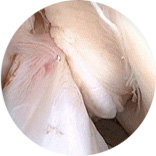

Advantages of endoscopy surgery

- Fast recovery and a small surgical incision
- Less pain after the operation
- Accurate diagnosis via cameras that look into directly inside the joint
- Diagnosis and the operation take place simultaneously
- Less blood loss and low risk of infection
- Reduced hospital stay and costs
- Minimal scars retaining beauty